Raising Premium Grassfed Cattle
Idlelo livestock
One of South Africa’s leading livestock resellers, supplying quality cattle to farmers across KwaZulu-Natal and beyond.
Learn more
One of South Africa’s leading livestock resellers, supplying quality cattle to farmers across KwaZulu-Natal and beyond.
Learn moresustainable farming, and trusted livestock excellence.
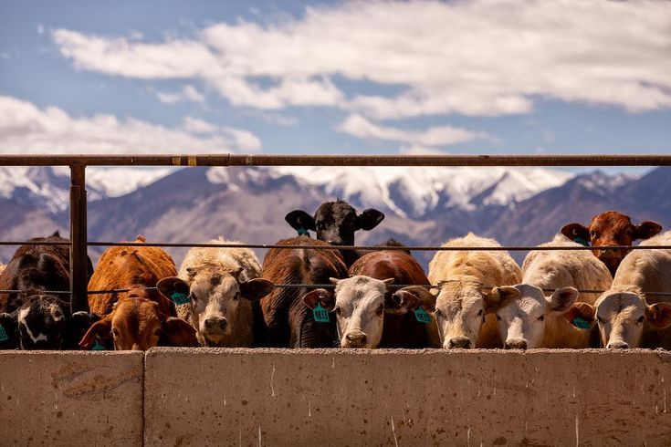
about us
Founded by Nkosinathi Mkhize Idlelo Livestock is a proudly growing livestock business based in Ladysmith, KwaZulu-Natal, specialising in the buying and reselling of quality cattle. We offer a variety of breeds, including Brahman, Nguni, and other quality livestock to meet the needs of farmers, buyers, and livestock enthusiasts.
Established in 2022 by a solo entrepreneur, Idlelo Livestock started with just 5 indigenous cattle. Through dedication, hard work, and a strong focus on quality livestock, the business has grown significantly and now manages a herd of approximately 300 cattle.
Today, Idlelo Livestock handles approximately 1,400 cattle per year and has created employment for a team of 6 employees. Our growth reflects our commitment to building a reliable livestock business and connecting quality cattle with customers across KwaZulu-Natal.
Our vision is to become a leading livestock seller in South Africa and a trusted livestock reseller across KwaZulu-Natal, built on quality, reliability, and long-term relationships.
Learn MoreBy The Numbers
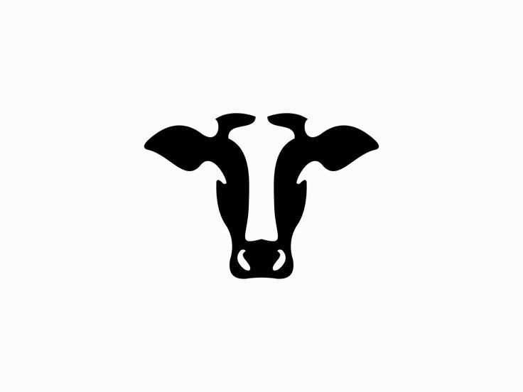
Cattle Currently Held
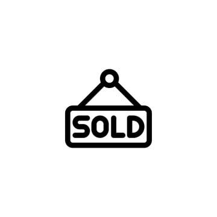
Cattle Resold Per Year

Dedicated Employees
Year Established
Premium cattle breeding, livestock sales, and sustainable farming solutions.
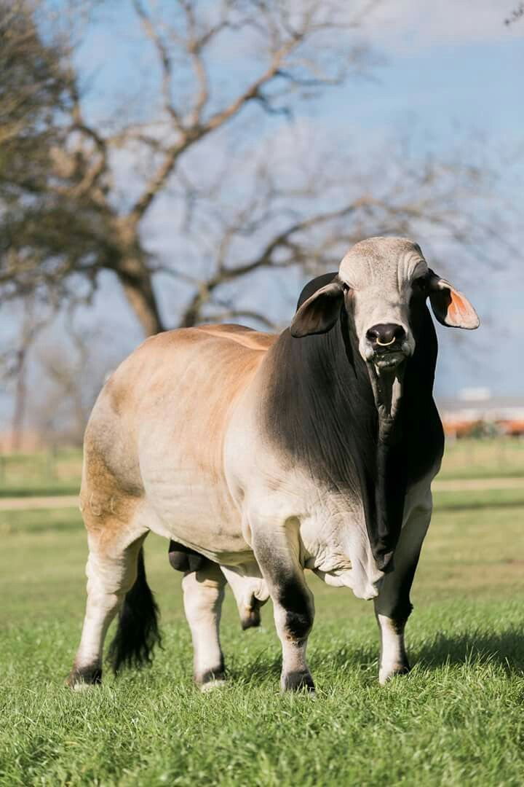
R8000
Healthy, grass-fed cattle with strong genetics and excellent breeding potential.
Enquire Now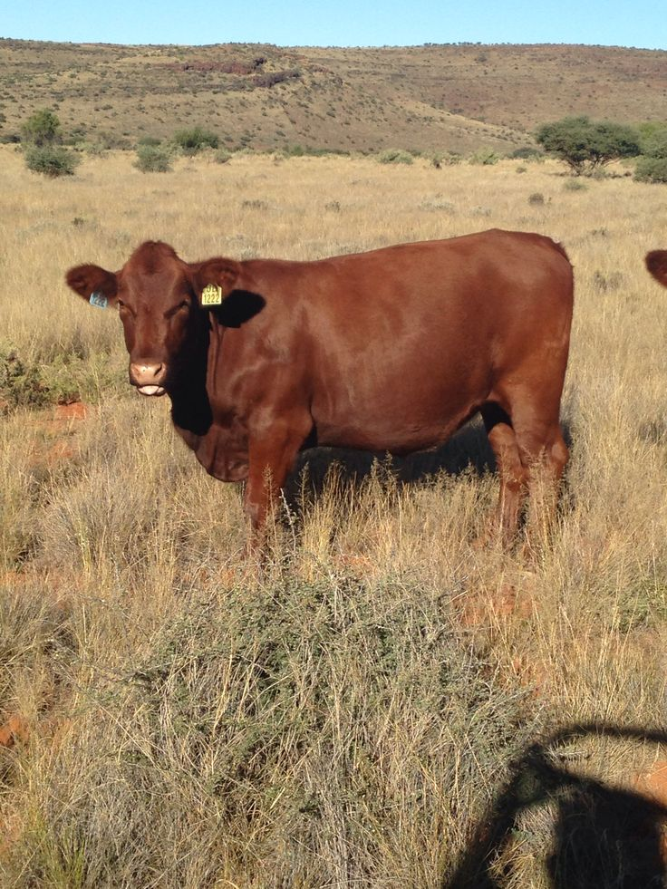
R12,500
Premium beef cattle known for excellent meat quality and fast growth.
Enquire Now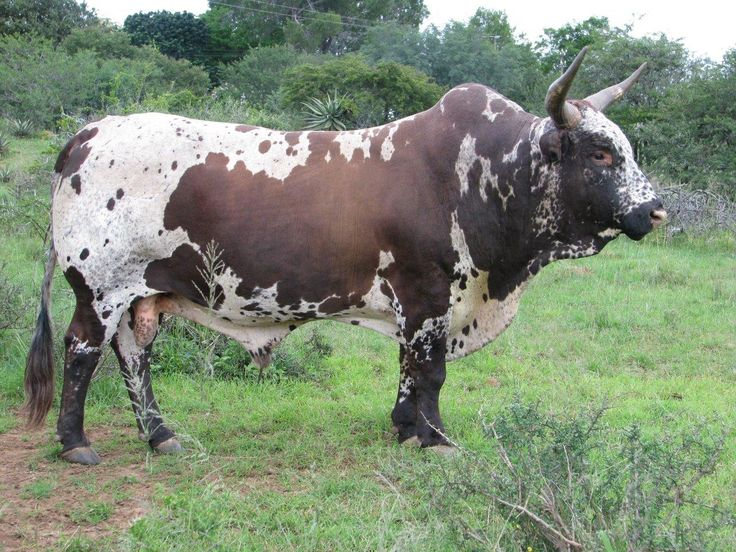
R9,500
Indigenous cattle valued for adaptability, fertility, and low maintenance.
Enquire Now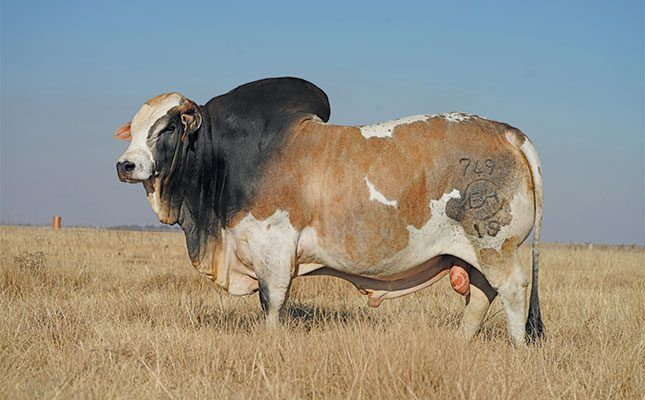
R11,000
Well-built cattle with excellent grazing ability and breeding performance.
Enquire NowTrusted by farmers across South Africa for quality cattle, reliable service, and long-term value.
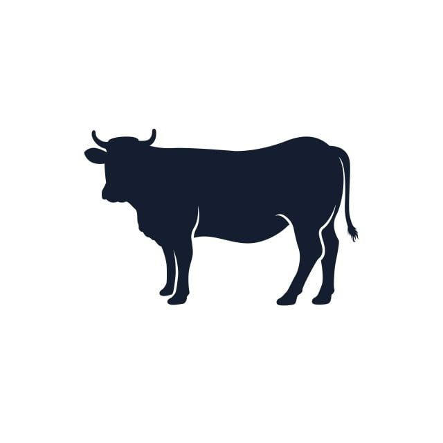
Our cattle are raised on natural grazing pastures with a strong focus on nutrition, health, and animal welfare.
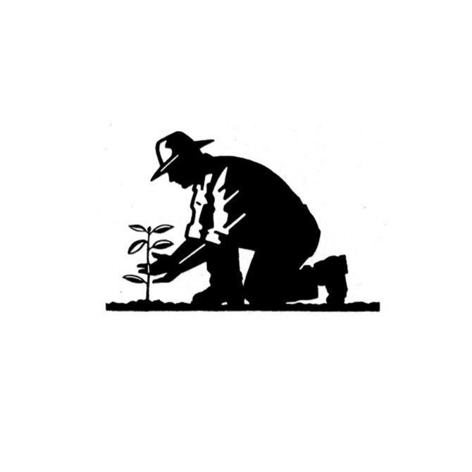
We use responsible farming practices that protect the land while ensuring long-term productivity and herd quality.
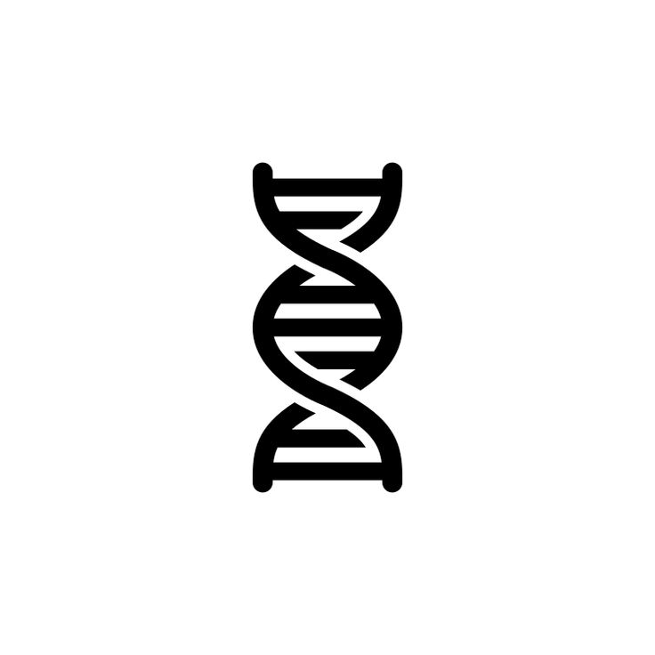
Our breeding program focuses on fertility, adaptability, growth performance, and strong bloodlines that deliver results.
Whether you are a first-time buyer or an experienced farmer, we provide honest advice and dependable service every step of the way.
Working with trusted partners to support quality livestock, sustainable farming, and reliable service.
Funeral & Memorial Services
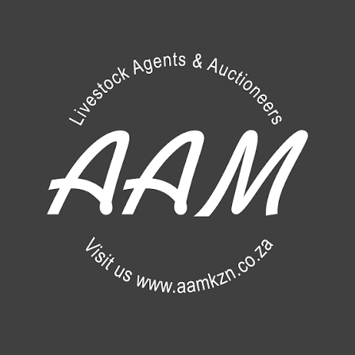
Livestock & Agricultural Auctions
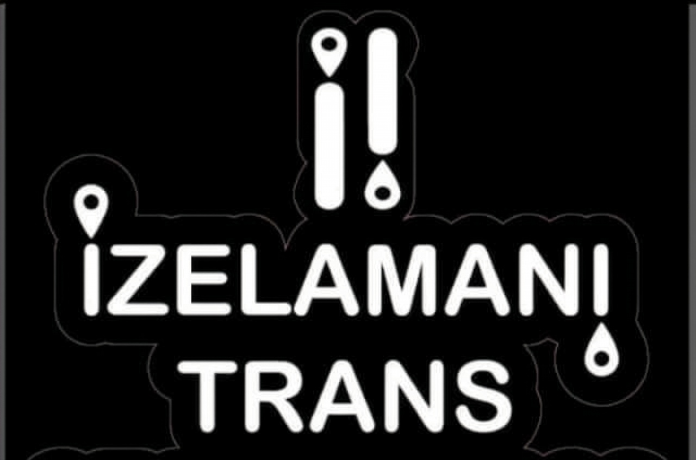
Reliable Livestock Transportation

Reliable Solutions for Your Livestock Needs
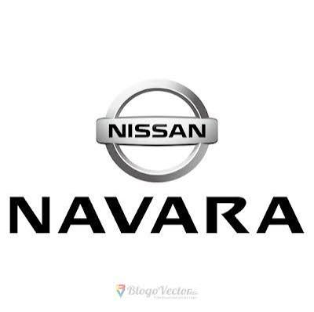
Reliable Farming & Transport
Trusted by farmers and livestock buyers across South Africa.
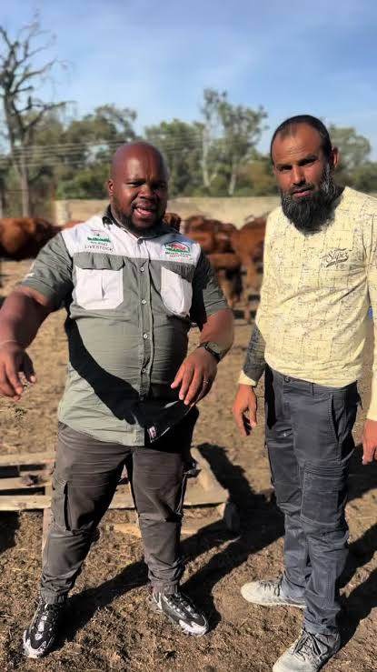
♡ Thank You for your support
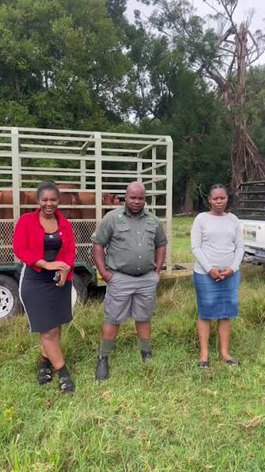
♡ We Appreciate Your Support
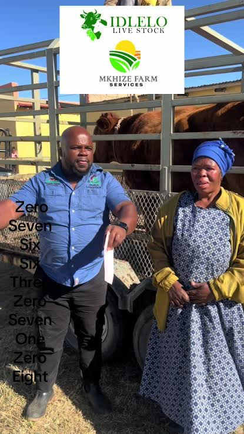
♡ Thank You for Being Part of the Idlelo Family
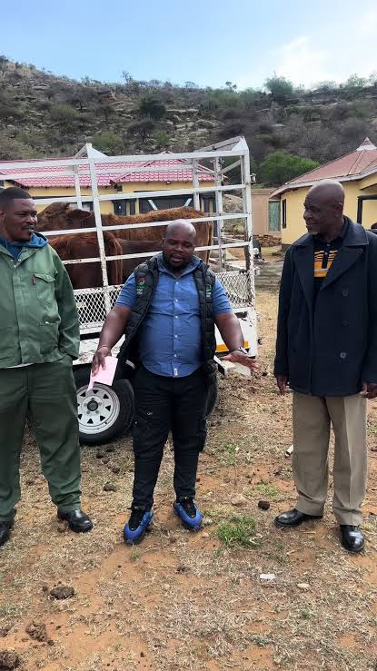
♡ Thank You for Supporting Idlelo Livestock
Get in touch with Idlelo Livestock for cattle enquiries, breeding stock, or farm visits.
Whether you're looking for premium breeding cattle, quality livestock, or more information about our farming practices, we're here to help. Contact us today and we'll get back to you as soon as possible.
cell: +27 76 630 7108
tel: +27 36 347 9044
Ladysmith, KwaZulu-Natal, South Africa
Monday – Saturday: 7:00 AM – 5:00 PM
Sunday: Closed